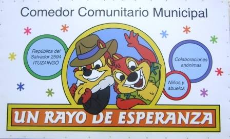

INVITAMOS A RECORRERLO, Y CONOCERNOS UN POCO MAS...
Nuestra Institucion nace en 1996 gracias al esfuerzo conjunto de un grupo de gente sensible a los
problemas de la comunidad, particularmente los chicos desamparados.
Nuestro objetivo inicial fue el dar un mínimo de alimento a los chicos de familias indigentes
con
severos cuadros de desnutrición.
Fue un comienzo bastante modesto.
En el patio de la casa de un integrante de esta institución comenzamos a dar el desayuno a 50
chicos
de la zona gracias a donaciones de personas sensibles ante los problemas de la comunidad.
Al poco tiempo surgió la necesidad de inscribirnos como institución de bien público y asi fue
como,
gracias al esfuerzo y la gestión permanente ante las autoridades comunales, logramos alcanzar en
el
2000, el RECONOCIMIENTO COMO INSTITUCIÓN BENEFACTORA DE LA NINEZ con la entrega de un cupo
alimentario para 30 chicos. Aunque exiguo, este cupo sirvió para consolidar el esfuerzo diario
de
conseguir comida.
Podiamos decir entonces, con orgullo, que dabamos un desayuno basado en leche y pan y un
almuerzo
consistente en sopa, un plato con repetición y fruta.
La crisis económica argentina, que se avecinaba inexorable nos golpeo con fuerza y encima mas
chicos
y ancianos se acercaron a nuestra institución empujados por la miseria y desocupación
creciente.
En todo este tiempo y con muchisimo esfuerzo y ayuda solidaria fuimos construyendo, paso a
paso, un
salón comedor para atender civilizadamente la alimentación de estos grupos.
Hoy damos diariamente alimento a más de 100 chicos y de 50 abuelos, y el esfuerzo para lograrlo es abrumador....
NECESITAMOS garantizar el abastecimiento de gas (garrafas) que nos permita
preparar la comida;
NECESITAMOS garantizar la cadena de donaciones que hoy sostienen buena
parte de
nuestra labor;
NECESITAMOS ayudar a nuestros abuelos y chicos en salud,
QUISIERAMOS mejorar la dieta con un mayor porcentaje de proteinas
(carne);
NOS GUSTARIA, en fin, crecer como institución para volcar un mayor esfuerzo
en
nuestra obra, hoy parte inseparable de nuestras vidas, a la que le dedicamos todo el amor y
el
esfuerzo de los que entienden que ayudar al prójimo es una accion humanitaria, superadora de
aquellos egoismos a los que a diario nos vemos sometidos.
Ponemos en vos nuestra esperanza de que puedas sumarte a esta obra de bien y que tu contribución nos ayude a acrecentar este sueño.
GRACIAS A TODOS AQUELLOS QUE NOS DAN UNA MANO
SON PARTE DE ESTA OBRA
QUE CONSTRUIMOS ENTRE TODOS
San Salvador 2594 (ITUZAINGO)
TEL.: 5275-7086
ungrupodeayuda@yahoo.com.ar